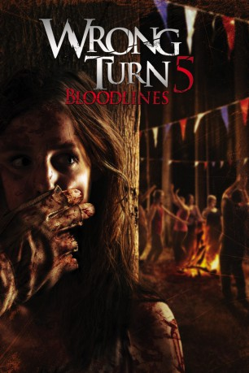

#6942 Wrong Turn 5 - Bloodlines
 
 IMDB-Wertung: 4.1 / 10
IMDB-Wertung: 4.1 / 10  Metascore: 0
Metascore: 0 
In einer kleinen Stadt in West Virginia wird zu Halloween das legendäre Mountain Man Festival ausgetragen – ein Spaß, den man sich nicht entgehen lassen sollte. So macht sich auch eine Gruppe von Jugendlichen um Billy und die schöne Lita auf ins eigentlich beschauliche Örtchen, wo sich bereits allerhand Partygänger in den ausgefallensten Kostümen tummeln und sich auf eine wilde Nacht mit viel Tanz und zahlreichen Albernheiten freuen. Doch auch dem Weg fährt die Gruppe einen Landstreicher an, was fatale Folgen hat: Denn bei diesem handelt es sich um Maynard, das Oberhaupt einer gefährlichen Inzucht-Familie. So nimmt der Party-Spaß beim Mountain Man Festival bald ein abruptes Ende, als die Hinterwäldler-Kannibalen-Familie von Maynard aufkreuzt, um die angereisten Studenten einem nach dem anderen genüsslich zu verspeisen…
Jahr: 2012
Dauer: 90 Minuten
FSK: 18
Land: USA Studio: 20th Century Fox Home EntertainmentTonspuren: DD5.1 - ,
Untertitel:
Auflösung: 1080p (1920x1080) Größe: 3952 MB
Genre: Horror
Regisseur: Declan O'Brien
Drehbuch: Declan O'Brien
Soundtrack:
Darsteller:
- Doug Bradley als Maynard
- Camilla Arfwedson als Sheriff Angela
- Simon Ginty als Billy
- Roxanne McKee als Lita
- Paul Luebke als Gus
- Oliver Hoare als Julian
- Amy Lennox als Cruz
 Radoslav Parvanov als One Eye
Radoslav Parvanov als One Eye Borislav Iliev als Three Finger
Borislav Iliev als Three Finger- Peter Brooke als Jason
- Finn Jones als Teddy
- Rosie Holden als Ginny
 Velizar Peev als Night Watchman
Velizar Peev als Night Watchman- Kyle Redmond-Jones als Deputy Biggs
- Duncan Wisbey als Mose
- George Karlukovski als Saw Tooth
- Andrew Bone als George
- Harry Anichkin als Doctor
- Renee Johnson als Girl
- Ioan Banzourkov als Teenager
- Emilia Klayn als Kaleen
- Svilen Cholakov als Deputy Mike
Datei: X:\FSK18-Collections\Wrong Turn\Wrong Turn 5 - Bloodlines (2012, FSK18, 1920x1080).mkv seit 08.09.2017
Festplatte: FSK18
 Es gibt insgesamt 9 Filme in der Gruppe 'FSK18-Collections\Wrong Turn'
Es gibt insgesamt 9 Filme in der Gruppe 'FSK18-Collections\Wrong Turn'